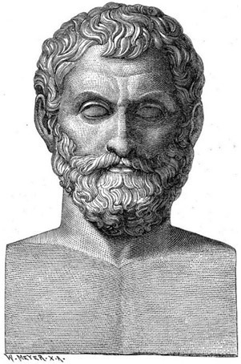
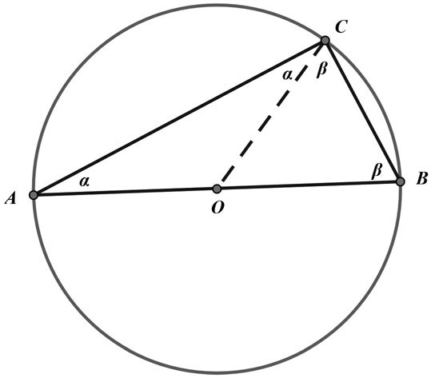
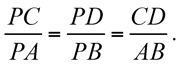
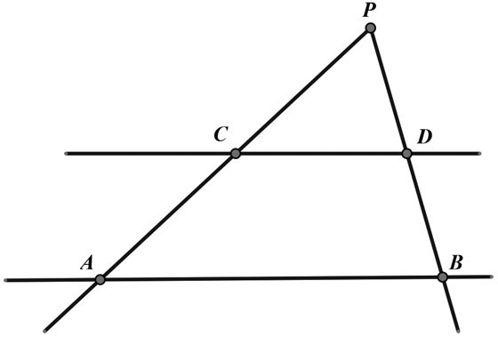

Figure 1.1. Thales of Miletus. (Illustration from Ernst Wallis et al., Illustrerad verldshistoria utgifven, vol. 1, Thales [Stockholm: Central-Tryckeriets Förlag, 1875–1879].)
As we look back to the mathematicians of ancient times, we find that there is not much information regarding the details of their lives. What we do have is often a collection of contemporary commentaries written about them and perhaps some of their actual writings. We shall begin with one of the earliest of the outstanding major mathematicians, Thales of Miletus, who was born in 624 BCE in the ancient Greek city of Miletus (today Milet, Turkey). Although he had influence in the very early study of geometry, he is probably best known today for what we refer to as Thales’s theorem, which simply says that if a triangle is inscribed in a circle with one side being the diameter of the circle, then the triangle is a right triangle. In addition to establishing this theorem, Thales led a very productive life not only as a mathematician but also as a philosopher and an astronomer, a combination that was common in his day.
The Greek society in which Thales was reared was less advanced than the societies of the ancient Egyptians and Babylonians, both of which cultures were leaders in mathematics and astronomy at the time. Despite this, it is believed that Thales was the Greeks’ first true scientist. In his youth, Thales spent his time as a merchant, supporting his family’s business.1 His travels brought him to Egypt, which is where he most likely became enchanted with science and mathematics. He gradually reduced his thinking about spiritual influences on life and replaced it with scientific explanations. This change of interests significantly reduced his earnings but did not seem to stop him. Furthermore, Thales occasionally used scientific knowledge to his advantage in the business world. It is said that during a particular winter he realized that the coming season would have a bumper crop of olives, and, as a result, he secured all the olive presses in the region so that his potential competition was at a strong disadvantage. This is merely one example how, with a scientific understanding, he did earn quite a sum of money.
Let’s look at some of the achievements in mathematics that are attributable to Thales. As we mentioned earlier, today he is best known for his accomplishments in geometry, since it is believed that he was the first to use deductive logic in establishing some geometric truths. In other words, he formalized the study of geometry from the typical practical aspects to the more formal deductive logic. One might say that Thales opened the doors for the study of geometry in ancient Greece, which peaked about three hundred years later. Thales died in the year 546 BCE, after having spent the last part of his life teaching at the Milesian school, which he founded.
Thales is largely remembered today for the theorem that bears his name. Although there are numerous ways to prove the theorem, we shall present one here that uses simple elementary geometry. In figure 1.2, we are given a triangle ABC inscribed in circle O, with side AB the diameter of the circle. Thales proved that angle ACB must be a right angle.

Figure 1.2.
Since triangle AOC is an isosceles triangle, the base angles, that is, those marked with α are equal. Similarly, triangle COB is also an isosceles triangle, so that the two angles marked with β are also equal. Since the sum of the angles of a triangle is equal to 180°, we have the following: α + (α + β) + β = 180°. Then, 2α + 2β = 180°, or α + β = 90°, which is what we wanted to prove. Clearly, the converse is also true; namely, that the center of a circumcircle of a right triangle is on the hypotenuse of the right triangle.
Another theorem that is attributed to Thales is shown in figure 1.3, where parallel lines AB and CD are cut by two transversal lines PCA and PDB. Thales proved that the following proportions are true:


Figure 1.3.
These demonstrations give us a good insight into the new kind of thinking that Thales introduced to the world; in this sense, he was a trendsetter!